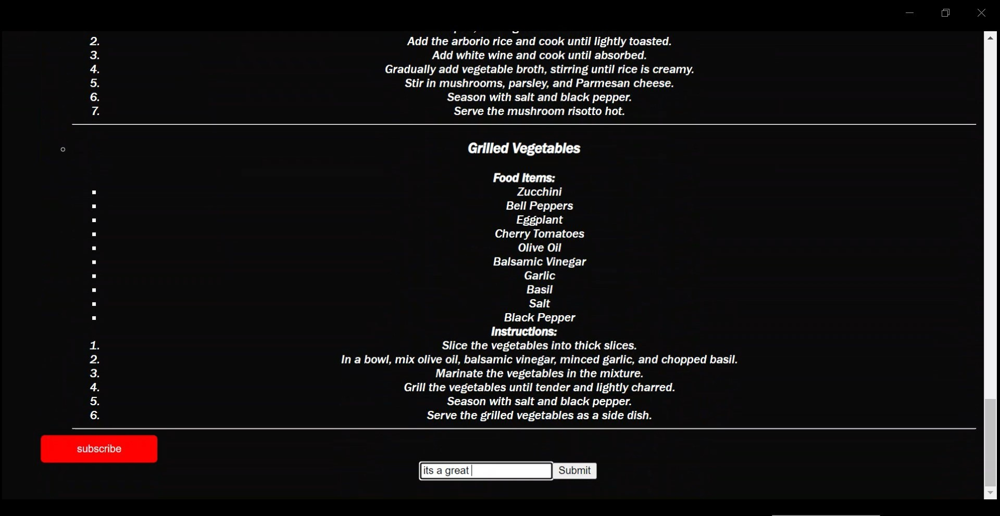
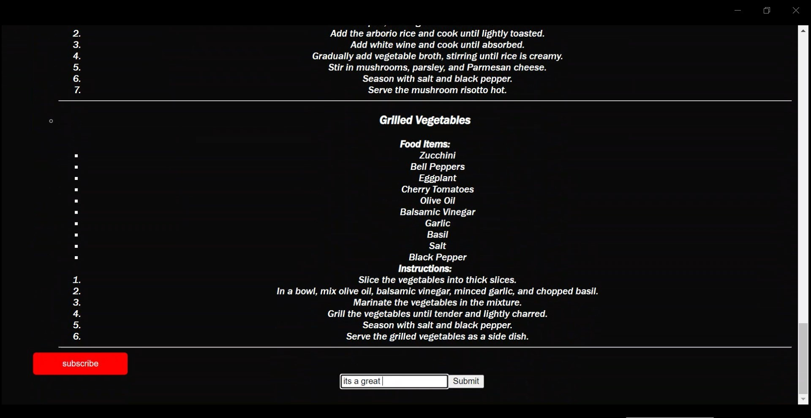
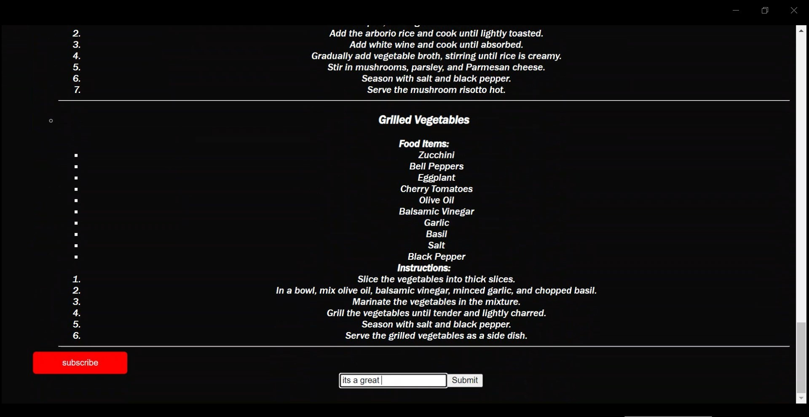

Welcome to my portfolio webpage. My name is Fiona Kwamboka Ombura. Here to walk you through some of the things you need to know about me ofcourse.I am a 19 year old Kenyan woman,5'1,darkskin,with big brown eyes. One crazy thing about me is that I have an incredibly strong sense of smell but the eyes, the eyes don't work.Anyways , let's begin
Let's go all the way back to 2004.Novmeber 20Th 2004 is the day I was born.I was born in Aghakhan hospital to Thomas Nyakeno Ombura and Janepher Magara as the third born.The late Thomas Nyakeno was a lawyer,Janepher a finance officer I was raised in komarock, Nairobi the first three years of my life. My family and I moved to kitengela just as I was about to embark on my formal education. I joined Treewa academy in the year 2007. This was a year full of changes for me,started schooling,completely different neightbours,new sibling. No sooner had I completed nursery than my parents got a new rock for their sling(Patricia Bosibori). with 3 siblings now, Thomas had to look for prospects of promotion definitely.this was a success but sadly, shortly after the promotion he passed on.Biggest tragedy of my life. We then relocated to Utawala ,new land ,new house,new school ,new friends,new neighbours I joined carmel catholic primary school.completed my primary education there and joined Bishop Gatimu high school in nyeri. completed highschool and joined the university.
NAME:Ombura Fiona Kwamboka
PHONE NUMBER:0748913590
EMAIL ADDRESS:omburafiona@gmail.com
POSTAL ADDRESS
MARRIAGE STATUS:single
LANGUAGES:English(native) and Swahili(fluent)
NATIONALITY:Kenyan
DRIVERS LICENSE:class A
2023:Geospatial Engineering at University of Nairobi(degree), Software Engineering at Moringa(certificate)
2019-2022:highschool
at Bishop Gatimu
2011-2018:primary school at Kiuini Preparatory school and Carmel catholic school
2007-2010
:Pre-School at Treewa Academy
online jobs from upwork entailing geospatial analysis
virtual assistance
web development from upwork
tutoring
Skating
Swimming
Drawing
Biking
Coding
gym workouts
Mr.Magara:0718590820
Mrs.Maureen:maureenmurimi@gmail.com
The meal planner app was the first ever project I embarked on after learning Html,css and a little bit of javascript this project was a practice of HTML and CSS mostly.Little of JS was incoporated
